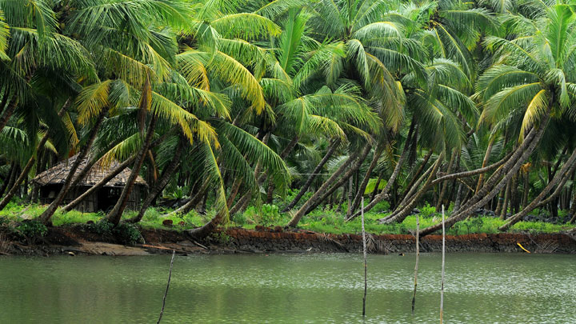
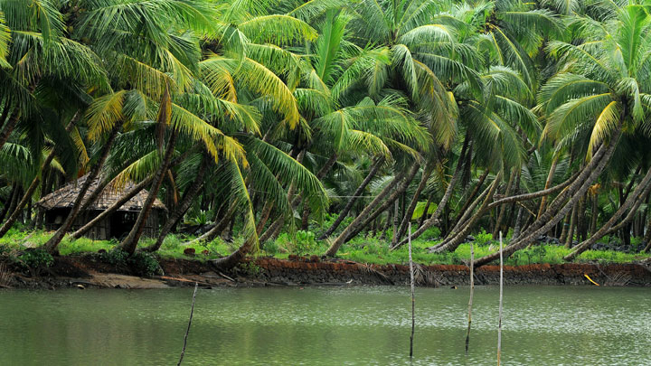

The northern most district of Kerala, Kasaragod is situated on the sea coast bordered by hilly Kodagu and Mangalore districts of Karnataka in the east and north. Fishing is a prime source of livelihood along with the coir and handloom industries. With its unique natural and cultural attractions Kasaragod is known as the land of gods, forts, rivers, hills and beautiful beaches. The Bekal Fort, which stands on a 35 acre headland that runs into the Arabian Sea, is the largest and best preserved fort in the State.
Kasargod is a small coastal town in Northern Pary of Kerala displaying a delightful blend of various religions, culture and bounty of nature. Blessed with majestic forts, lofty hills, beautiful offbeat backwaters, temples and pristine beaches, the town oozes charm and tranquillity from every aspect. It is gaining popularity among people from nearby cities owing to the presence of luxury resorts.
Kasargod is also known for its rich and glorious past, is considered to be home to some of the best-preserved forts in Kerala. The variety of art and culture of the town speaks volume about its diversity. In fact, one can hear about seven languages spoken in the town, Tulu, Malayalam, Kannada, Tamil and Konkani being the most famous ones. Adorned with several tourist attractions, this family-friendly destination with booming coir and handloom industry is worth a visit.
 
